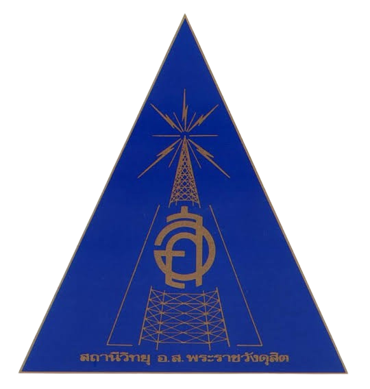
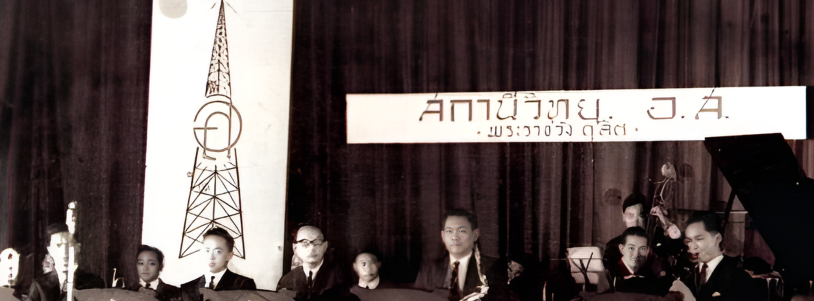

สถานีวิทยุ อ.ส. พระราชวังดุสิต
ประวัติสถานี
ติดต่อ
ตารางออกอากาศ

❮
❯
RadioLive - สถานีวิทยุ อ.ส. พระราชวังดุสิต
ออกอากาศในคลื่นความถี่ 104mhz Am 1332khz
ออกอากาศทุกวันตั้งแต่เวลา 9.00-19.00
วีดีโอแนะนำรายการ